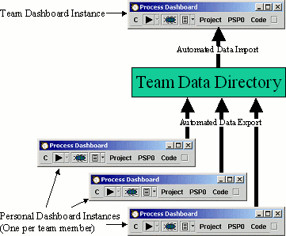

Team Use - PSP Data and Earned Value
This approach can take your team a long way toward using
high-maturity techniques to track project progress.
To correctly use this technique, it is helpful to understand the
rollup process used by this approach. In this approach, each team
member will run their own personal instance of the dashboard, which
they use to capture and track their own personal metrics. In
addition, a team instance of the dashboard is run. This team instance
aggregates team data, calculates rolled-up metrics, and displays
charts and reports of team project data.

To simplify ongoing communication, this approach uses a shared
network directory (labeled "Team Data Directory" in the
diagram above). Individuals configure their personal dashboard
instances to periodically export metrics data. Each individual's data
is saved into a different file in this network folder. Meanwhile, the
team dashboard instance is configured to import data from this same
directory. The resulting imported data is then rolled up using
existing mechanisms already present in the Process Dashboard.
To use this approach, follow the steps below.
Create Team Data Directory
Most teams have a folder on a shared network drive where project
documents are stored. Create a subdirectory specifically for
dashboard metrics data. The main requirement is that all team members
should have the ability to save files to this directory. In a Windows
environment, each team member will most likely want to map the network
drive so the folder is accessible via a simple filename.
Depending on your organizational culture, you may also wish to
tighten permissions to prevent non-team members from viewing the
data.
Create Team Dashboard Instance
The word "instance" may be confusing to some. By
"instance," we mean a running dashboard program window, with
its own data storage area that differs from other
"instances."
You can run the Team Dashboard instance just about anywhere.
Practically speaking, it is probably easiest to run it on the project
manager's computer or team leader's computer. If you have access to a
shared network computer, you might decide to run it there instead;
however, you may occasionally need to interact with the graphical user
interface for the team dashboard instance, so you should not run it on
an inaccessible computer locked in a server room.
Creating a team dashboard instance is fairly simple:
- Install the Process Dashboard on the computer in question if it is
not there already.
- If you are running the team dashboard on the project manager's
computer or the team leader's computer, then it will be common for
them to have a personal dashboard instance as well. This isn't a
problem. To create a second instance:
- Make a copy of the shortcut you use to run the dashboard.
Rename the shortcut with a name like "Team
Dashboard."
- Right click on your new shortcut and choose
"Properties."
- In the window that appears, change the "Start in:"
field to name a different directory. (By default, it will
typically read "C:\pspdata".) Create a new
directory on your hard drive (for example
"C:\teamdata" - but anything is fine) and
enter its name in the "Start in" field.
- Put your cursor at the end of the "Target" field,
and append a space, followed by the double quote character
("), followed by the words Team Dashboard, followed by
another double quote character. This will cause the words
"Team Dashboard" to be displayed in the title bar of
the Team Dashboard instance.
- Click OK
- Try launching the dashboard using your new shortcut. The new
shortcut should launch a dashboard instance that is completely
independent from your original dashboard instance, and which
displays "Team Dashboard" in its title bar.
- Next, we'll configure the team dashboard to import data from the
"Team Data Directory." From the C menu on the team
dashboard window, choose "Tools
 Import". The Data Import
Wizard will appear. Select "Import Project Metrics" and
click Next. On the next screen:
Import". The Data Import
Wizard will appear. Select "Import Project Metrics" and
click Next. On the next screen:
- Click the Browse button, and select the "Team Data
Directory."
- For the data prefix, choose a string like
"/Imported/Team Project Name"
- Make certain to choose the option to "Import the data for
future dashboard sessions, as well."
- Click the Next button. If there are any metrics files present
in the "Team Data Directory," they will be imported
immediately. In the future, the dashboard will scan the
contents of that directory every 10 minutes or so to see if
any files have been created or updated, and will automatically
import any new data it finds.
Configure Individual Dashboard Instances
Next, you should set up the Dashboard instances for each team member.
Have each team member follow these steps:
- Install the Process Dashboard on the individual's computer if it
is not there already.
- Run the dashboard, and open the Hierarchy Editor. Somewhere in
your dashboard hierarchy, create a "Node" (using the
"Edit Add Node"
menu) to represent the work you will perform for this project.
Save the changes by selecting "File Save" from the Hierarchy
Editor window. Close the Hierarchy Editor.
(Later, when you
begin planning your personal work for this project, you should
create nodes and PSP templates representing project tasks. These
should be placed hierarchically underneath this project
node to ensure that their metrics are included in the team
rollup.)
- From the C menu on the main dashboard window, choose Task and
Schedule. Create a new schedule to represent your project. In
the task list for this new schedule, add the node you
created in step 2 above. (For additional help on creating this
earned value schedule, see the Using the Task &
Schedule Tool help topic.) Save the schedule. Close the Task
& Schedule window.
- From the C menu on the main dashboard window, choose "Tools
Export". The Data Export
Wizard will appear. Select "Export Project Metrics" and
click Next. On the next screen:
- Click the Browse button to select a file where data will be
exported. Choose a filename that includes your name or
initials, and place the file in the "Team Data
Directory."
- In the hierarchy tree, select the node you created in step
2 above.
- Make certain to choose the option to "Export the data for
future dashboard sessions, as well."
- Click the Next button. The dashboard will export metrics data
to the file you selected. In the future, the dashboard will
automatically export your most recent data each time it shuts
down (or each night around midnight if you leave the dashboard
running continually).
Create Team Rollups
Once all team members have configured their dashboards as described
above, data should be available to the team dashboard. You'll want to
create two different types of team rollup: a rolled up earned value
schedule, and rolled up project metrics.
Creating the Rolled-up Earned Value Schedule
- Open the Team Dashboard instance and select "Task &
Schedule" from its C menu. If it displays a window giving
you an option to open an existing schedule, click "New."
- When you see a dialog entitled "Create New Schedule,"
enter a name for your team project schedule and select
"Create EV Roll-up" from the drop-down list. Click OK
to create the new rollup schedule.
- The window that appears should give you an opportunity to add
schedules to the rollup; add each individual's schedule in turn.
(If some individual's schedule does not appear in the list, then
they have not correctly configured their personal dashboard as
described above.) Save the team rollup schedule.
- You can view an HTML report of the team rollup schedule by
clicking the "Report" button.
Creating Rolled-up PSP Metrics
- Open the Team Dashboard instance and select "Hierarchy Editor"
from its C menu.
- Highlight a node in the hierarchy editor like "Project"
and select the "Edit Add
Template Rollup PSP Data"
menu option. A new node will be created; give it a name
appropriate for your project. Save and close the Hierarchy
Editor.
- Use the Hierarchy Menus to navigate to the node you just created.
Click the drop-down arrow to the right of the Script Button.
Choose the "Analyze Rollup Data" option. An analysis
web page for the project will be displayed. This web page rolls
up data from PSP tasks in the project. (If people use a non-PSP
process to perform their work, that data will not be rolled up
into this analysis.)
- By default, the analysis web page will include data from all the
completed PSP tasks imported into the team dashboard instance.
You can change the criteria by selecting the "Edit Data
Rollup Filter" option on the Script Button's drop-down
menu. By editing the values on the rollup filter form, you can
instruct the rollup to include
- Data from all PSP tasks, whether they are complete or not
- Data for all tasks with certain keywords (this can be a useful
way to view a subset of the data in your project)
If you choose to import metrics for more than one project into a
single team dashboard instance, you can constrain this rollup to
include data for only a single team project by entering the data
import prefix (which you selected in step
3b of the "Create Team Dashboard Instance" steps
above) into the field labelled "Only rollup projects whose
path starts with."
If you find yourself
editing the filter frequently to see different data views, you can
instead repeat step 2 above to create any number of distinct
rollups. Then provide different filter criteria for each
rollup.